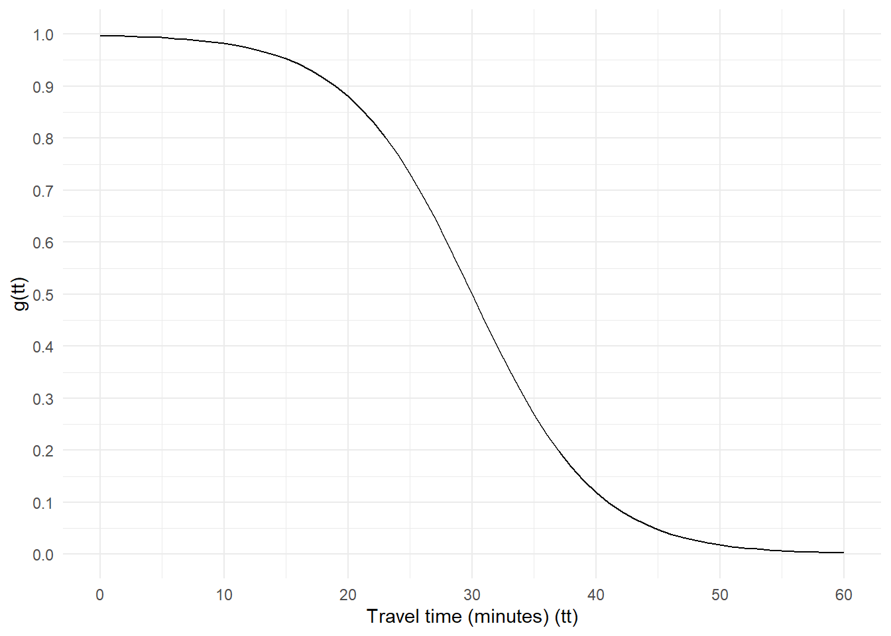

Measuring a Predicting the Potential for Car Independence
Abstract
No more than 200 words
Introduction
Mostly signposting
Defining car dependence
Cite prior literature on defining car dependence
Relative accessibility as car dependence
Which destinations?
Which mode?
Selection of the decay function
Data and methods
I propose the ratio of average car-free accessibility to average accessibility by car as a measure of the potential for car independence. I have calculated this metric for each of 917 metropolitan and micropolitan areas (hereafter referred to as regions) in the United States, and for the 81,144 census tracts (hereafter referred to as neighborhoods) contained within those regions. This section describes how I calculated this metric, how I validated it as a predictor of observed travel behavior, and how I determined the degree to which certain built environment characteristics predict the potential for car independence in regions and neighborhoods across the United States.
Potential for Car Independence Metric
I calculated the potential for car independence (PCI) for a region or neighborhood as the ratio of destination access without a car to destination access with a car, as shown in Equation 1.
\[ PCI_{point} = \frac{A_{carless}}{A_{car}} \tag{1}\]
where:
\(A_{carless}\) = Average accessibility by walking and, where available, public transport and
\(A_{car}\) = Average accessibility by private car.
I calculated the average accessibility within a particular mode category for a region or neighborhood as the average of the accessibility of the centroid of each constituting census block (which generally corresponds to a physical block: an area bounded by streets or possibly other physical boundaries), weighted according to the number of households in each block, as shown in Equation 2.
\[ A_{area} = \frac{\sum_{i}a_ihh_i}{\sum_{i}h_i} \tag{2}\]
where:
\(hh_i\) = the number of households in a census block and
\(a_i\) = the accessibility of the census block’s centroid.
I took the number of households in each census block (\(hh_i\)) from the 2020 Decennial Census using the tidycensus package in R (Walker and Herman 2023) to query data from the United States Census Bureau’s application programming interface (API). I calculated the accessibility of block centroids (\(a_i\)) using the r5r package in R (Pereira et al. 2021) which uses the R5 routing engine to calculate gravity-based accessibility, as shown in Equation 3.
\[ a_i = \sum_{j}n_jg(tt_{ij}) \tag{3}\]
where:
\(n_j\) = the estimated number of attractions in block j, and
\(g(tt_{ij})\) = the decay function of the travel time between block i and block j.
For this research, I used a logistic decay function, as shown in Equation 4 and illustrated in Figure 1.
\[ g(tt) = \frac{1}{1+e^{(tt - 30)/5}} \tag{4}\]
The number of trip attractions in each block is intended to be roughly proportional to the number of non-home trip ends of household trips that might be generated by the block. I estimated this number using the parameters given in Table 4.4 of the National Highway Cooperative Research Program (NCHRP) Report 716 (National Academies of Sciences, Engineering, and Medicine 2012, 42). This table summarized parameters used to estimate trip attraction in travel demand models used in regions across the United States. From this report, I combined Model 1’s parameters for home-based work trip attractions (Equation 5), Model 3’s parameters for home-based non-work trips attractions (Equation 6), and Model 2’s parameters for non-home-based trip attractions (Equation 7) to arrive at Equation 8 to estimate the total number of trips attractions in each census block. Again, the number of households in each census block was taken from the 2020 Decennial Census. The numbers of jobs in the basic, retail, and service sectors were taken from the United States Census Bureau’s LEHD Origin-Destination Employment Statistics (LODES) Data (United States Census Bureau 2025) for 2018.
\[ hbw = 1.2E_{total} \tag{5}\]
\[ hbnw = 0.7hh + 0.7E_{basic} + 8.4E_{retail} + 3.5E_{service} \tag{6}\]
\[ nhb = 1.4hh + 6.9E_{retail} + 0.9E_{service} \tag{7}\]
\[ a = 2.1hh + 1.9E_{basic} + 16.5E_{retail} + 5.6E_{service} \tag{8}\]
where:
\(hbw\) = the number of home-based work trip attractions in a census block
\(hbnw\) = the number of home-based non-work trip attractions in a census block,
\(nhb\) = the number of non-home-based trip attractions in a census block,
\(a\) = the total number of attractions in a census block,
\(hh\) = the number of households in a census block,
\(E_{total}\) - the total number of jobs in a census block,
\(E_{basic}\) - the total number of goods-producing jobs in a census block,
\(E_{retail}\) - the total number of retail jobs in a census block, and
\(E_{service}\) - the total number of service jobs in a census block.
Validation of potential car independence metric
The theoretical basis for PCI as a metropolitan-scale measure of the freedom travelers may have to forgo the car is straightforward: If a greater share of destinations that can be reached by car can also be reached without a car, then a person has a greater ability to choose car-free travel for some or all of their daily trips. A person may still choose to travel by car even when there are other alternatives, but if PCI is a valid measure of the potential for travelers to choose non-car modes, it is reasonable to expect it to correlate with observed mode choice.
To test the validity of the PCI metric, I calculated the correlation between PCI and the share of workers in each metropolitan area commuting by each of four modes: private car, public transit, walking, and cycling, as well as vehicle ownership. I also estimated a set of regression models predicting each of those mode shares from PCI, controlling for each of the following sociodemographic characteristics:
Percent of the population under the age of 18
Percent of the population over the age of 65
Percent of the population with a household income less than 200 percent of the federal poverty level.
Predictors of the potential for car independence
If PCI is a valid measure of the freedom that households have to use more sustainable modes of travel to meet their daily needs, then it would be useful for urban planners to understand what built environment and urban form characteristics are associated with higher values of PCI. I estimated neighborhood-level and region-level linear regression models to predict PCI based on the predictors described below. Each of the variables described below was calculated at the regional level and some were also calculated at the neighborhood level. The regional level model includes only regional level variables. The neighborhood-level model includes all regional-level variables as well as additional neighborhood-level variables.
Land area
Regions with larger land areas contain larger distances. At one extreme, a region with very small geography footprint might include no possible origin-destination pairs that are not within a reasonable walking distance from one another, so smaller regions (in terms of area) have higher PCIs than larger ones. I calculated values for this predictor only at the regional level and included it in both the regional-level and neighborhood level models.
Attraction density
I calculated attraction density at the neighborhood level and at the regional level as the total number of attractions in an area divided by the total land area within an area. A higher density of attractions would likely generally reduce the average distance between households and trip attractions, making it more likely that trip attractions would be reachable within a given time both with and without a car. The region-level model predicting PCI includes only the region-level attraction density variable. The neighborhood-level model includes both the region-level and neighborhood-level attraction density variables in order to determine whether neighborhood-level or region-level attraction density has a greater influence on neighborhood-level PCI.
Attraction concentration
While attraction density may be a useful measure of the average trip distance within a region, the concentration of attractions better captures the variation in trip distances. I calculated attraction concentration (only at the region level) as a ratio of the regions land area to the total area of the smallest set of census blocks containing at least fifty percent of the region’s attractions, scaled to account for how much more than fifty percent of total regional attractions are included in this subset of census blocks (see Equation 9). If attractions are evenly distributed throughout a region with 100 equally-sized census blocks, this value would be two. If all attractions are concentrated in a single census block (in a region with 100 equally-sized census blocks), this value would be 200.
\[ AC = \left(\frac{area_{total}}{area_{attr50}}\right)\left(\frac{n_{attr50}}{0.5attr}\right) \tag{9}\]
where:
\(area_{jobs50}\) = the total land area of the smallest number of census blocks containing at least 50 percent of all attractions in the region,
\(area_{total}\) = the total land area of the region,
\(attr\) = the total number of attractions in the region
\(n_{attr50}\) = the number of attractions in the smallest number of blocks containing at least 50 percent of all attractions in the region
Intersection density
Intersection density is commonly associated with greater walkability because it is associated with shorter block lengths and consequently more direct pedestrian routes (CITE). I extracted intersection locations from the OpenStreetMap network, as downloaded using the osmdata R package (Mark Padgham et al. 2017) and calculated intersection density at both the neighborhood and region levels as the number of intersections per square kilometer of land area.
Average nodal degree
Average nodal degree is another common walkability network (CITE). The degree of an intersection is the number of street segments that connect to it. For example, a typical intersection in a grid network would have a nodel degree of four; a T-intersection would have a nodal degree of three; and the end of a cul-de-sac would have a nodal degree of one. The average nodal degree within an area is the average degree of all intersections within that area. A lower average nodal degree is associated with a more circuitous street network, and a higher average nodal degree is associated with more direct routes. I calculated average nodal degree at both the region and the neighborhood level.
Transit stop density
The presence and frequency of transit service would likely also have an effect on the potential for car independence. I calculated transit stop density (at the region and neighborhood levels) as the number of times a transit vehicle would stop within an area during a typical week. Of the 917 regions included in this analysis, xxx had any identified transit service. Regions and neighborhoods without transit service would have a value of zero for this predictor.
Results
Mark Padgham, Bob Rudis, Robin Lovelace, and Maëlle Salmon. 2017. “Osmdata.” Journal of Open Source Software 2 (14): 305. https://doi.org/10.21105/joss.00305.
National Academies of Sciences, Engineering, and Medicine. 2012. Travel Demand Forecasting: Parameters and Techniques. Washington, DC: The National Acadamies Press. https://doi.org/10.17226/14665.
Pereira, Rafael H. M., Marcus Saraiva, Daniel Herszenhut, Carlos Kaue Vieira Braga, and Matthew Wigginton Conway. 2021. “R5r: Rapid Realistic Routing on Multimodal Transport Networks with R5 in r.” Findings. https://doi.org/10.32866/001c.21262.
United States Census Bureau. 2025. “LEHD Origin-Destination Employment Statistics Data (2000 - 2024) [Computer File].” Washington, DC. https://lehd.ces.census.gov/data/#lodes.
Walker, Kyle, and Matt Herman. 2023. Tidycensus: Load US Census Boundary and Attribute Data as ’Tidyverse’ and ’Sf’-Ready Data Frames. https://CRAN.R-project.org/package=tidycensus.